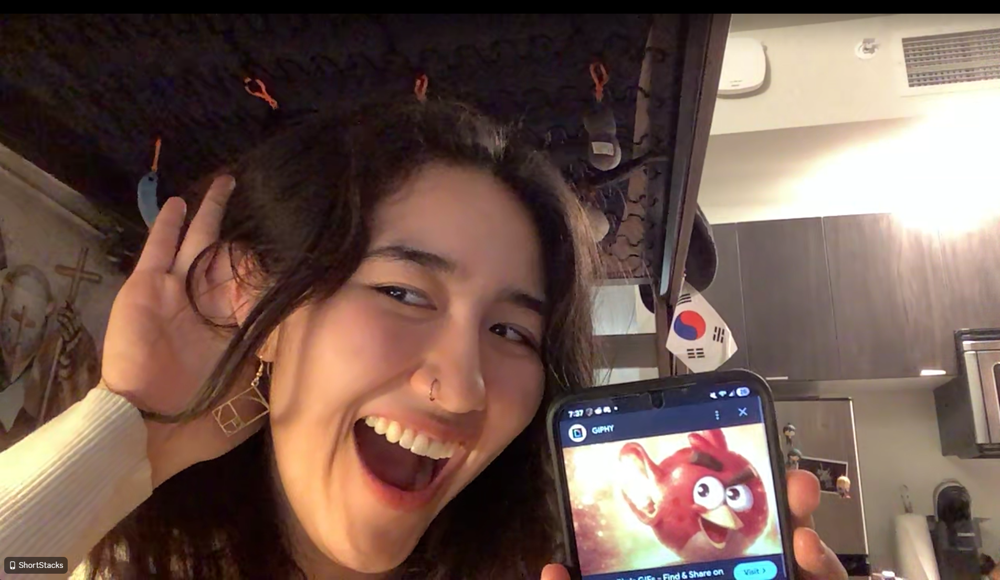
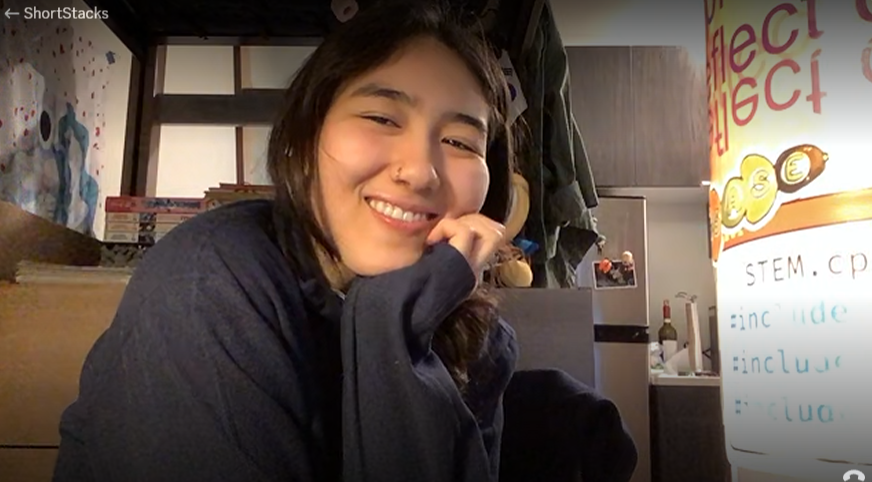
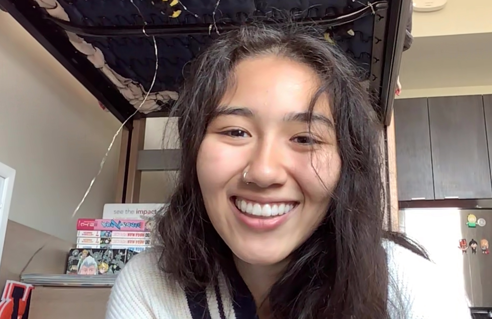
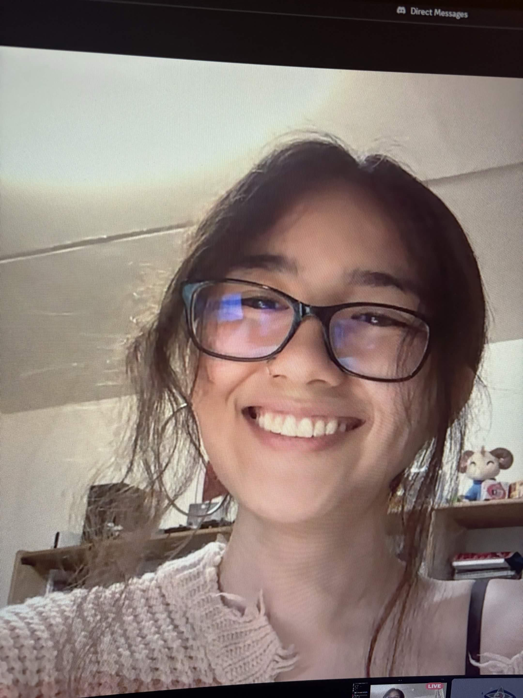

I really like the way your smile looks against the light in this image. Its kinda old, but I'm glad I kept it :) I think that the way that you held up your hand was pretty—almost statue like to me. Its beautiful in every way.

This one was such a random moment, but I'm glad I caught it. I think its goofy, and I really think that the white sweater complemented your earrings well in this shot! Also, I think you managed to imitate the angry bird pretty well :p

I think that this pose was pretty, especially as it feels like something I could stare at for hours. I actually think that the water bottle helped the shot quite a bit, namely that it narrows the focus over to you :) This was a nice memory of the time we "made" our own matcha ice cream. It's a one-off moment in the grand scheme of things, but it's still special to me.I love that sly grin ;)

This image is one of my favs of your; I actually took like 10 different shots during this moment, but I liked this one the most. Whenever it comes up as the wallpaper for my phone I cant help but look more and more at it :)

You look pretty in glasses. I think that they complement your hair real well in this image. It's a nice look, and sometimes I wish you didn't break your glasses just so I could see the fit again.